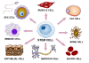

differentiation

Definition: Cellular differentiation is the process in which a stem cell changes from one type to a differentiated one. Usually, the cell changes to a more specialized type. Differentiation happens multiple times during the development of a multicellular organism as it changes from a simple zygote to a complex system of tissues and cell types. Differentiation continues in adulthood as adult stem cells divide and create fully differentiated daughter cells during tissue repair and during normal cell turnover. Some differentiation occurs in response to antigen exposure. Differentiation dramatically changes a cell's size, shape, membrane potential, metabolic activity, and responsiveness to signals. These changes are largely due to highly controlled modifications in gene expression and are the study of epigenetics. With a few exceptions, cellular differentiation almost never involves a change in the DNA sequence itself. However, metabolic composition does get altered quite dramatically where stem cells are characterized by abundant metabolites with highly unsaturated structures whose levels decrease upon differentiation. Thus, different cells can have very different physical characteristics despite having the same genome.
Source: Wikipedia
Wikipedia Page (Something wrong with this association? Let us know.)
Wikidata Page (Something wrong with this association? Let us know.)